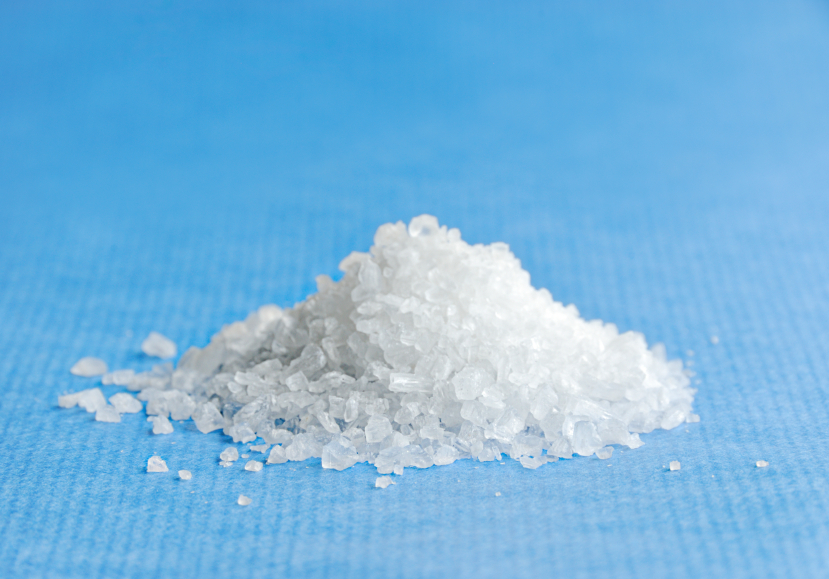

Figure Formatting
This is a trial page testing figure formates.
Our laboratory is in the Wellcome Centre for Human Genetics and we
An image is below
and another one png below this here
An explanatory caption is helpful
now in a row
and again
End of page
Salt can raise blood pressure leading to strokes and heart disease. Lowering salt intake lowers blood pressure and so reduces the risk of stroke and heart disease. For people with kidney disease, lowering salt intake can slow the deterioration in kidney function.
Blood Pressure
There is very good evidence that salt can make your blood pressure higher. High blood pressure has many bad effects. It makes it more likely that you will have a stroke, a heart attack and develop kidney failure. High blood pressure can also damage other blood vessels including those in your eyes. If you already have high blood pressure and are on treatment for it, then lowering your salt intake can help to reduce the amount of medication that you need to control your blood pressure. Read what the blood pressure association says about salt here. Read what the British hypertension society says about salt here.
Blood Pressure |
 |
Heart Disease: Salt raises blood pressure. High blood pressure causes heart disease including heart attacks, angina and heart failure. If you can lower your salt intake you will lower your blood pressure and so reduce the chance of getting heart disease. If you already have heart disease, then lowering your salt intake will help to lower your blood pressure and so reduce the strain on your heart. If you already have heart failure, lowering your salt intake may help reduce the amount of swelling and fluid retention that you experience. The swelling and fluid retention happen because your kidneys are not able to get rid of all the salt that you are eating. Read what the British Heart Foundation says about salt here. |
 |
Heart disease
Salt raises blood pressure. High blood pressure causes heart disease including heart attacks, angina and heart failure. If you can lower your salt intake you will lower your blood pressure and so reduce the chance of getting heart disease. If you already have heart disease, then lowering your salt intake will help to lower your blood pressure and so reduce the strain on your heart. If you already have heart failure, lowering your salt intake may help reduce the amount of swelling and fluid retention that you experience. The swelling and fluid retention happen because your kidneys are not able to get rid of all the salt that you are eating. Read what the British Heart Foundation says about salt here.
Blood Pressure |
|
Strokes
Salt raises blood pressure. High blood pressure causes strokes and mini-strokes or transient ischemic attacks (TIAs). If you can lower your salt intake you will lower your blood pressure and so reduce the chance of having a stroke. If you have already had a stroke, then lowering your salt intake will help to lower your blood pressure and so reduce the chance of having a further stroke. Read what nice says about lowering salt here.
Heart Disease: Salt raises blood pressure. High blood pressure causes heart disease including heart attacks, angina and heart failure. If you can lower your salt intake you will lower your blood pressure and so reduce the chance of getting heart disease. If you already have heart disease, then lowering your salt intake will help to lower your blood pressure and so reduce the strain on your heart. If you already have heart failure, lowering your salt intake may help reduce the amount of swelling and fluid retention that you experience. The swelling and fluid retention happen because your kidneys are not able to get rid of all the salt that you are eating. Read what the British Heart Foundation says about salt here. |
Chronic kidney disease
High salt intake can make kidney function deteriorate more quickly than it would otherwise. This means that for people with chronic kidney disease(CKD), lowering salt intake can help to keep the kidneys working well for longer. This is partly because salt raises blood pressure and high blood pressure can damage kidneys. However, the kidney is the organ that removes salt from the body and a high salt intake seems likely to have a direct effect on kidney function. If you have advanced chronic kidney disease (CKD), then your kidneys may find it difficult to get rid of the salt that you eat. If this salt accumulates, then water will accumulate with it in your body. This causes fluid retention or swelling especially of your ankles. It can also cause your blood pressure to rise. If you have CKD you may be given a diuretic (a ‘water tablet’) to help your kidneys to remove the salt from your body. By helping your kidneys to remove the salt, it helps remove the water with it. As a result you may notice that you pass more urine than normal after taking the tablet. Commonly used diuretics are furosemide (previously called frusemide), bumetanide and bendroflumethiazide previously bendrofluazide). If your kidneys are struggling to eliminate the salt that you are eating, then it makes sense to try to reduce the amount of salt that you are eating and so make it easier for your kidneys to do their job. Read what kidney research UK says about salt here.
Welcome to the ox salt website. This site is designed to help you to reduce the amount of salt you eat. There is lots of information and tools to help you reduce the amount of salt in your diet. The key steps are:
understand why we need to reduce our salt intake
Know how much salt you eat
Know how to make healthier choices
There are lots of useful links that will help you guide you in reducing your salt intake and you might want to have a look at some of them here
As a start why not watch look over our salt Presentation,. or look at our Salt Booklet,
Salt was introduced into our diet to preserve food before refrigerators and freezers were available. However, it is not good for our health and there is real benefit from lowering the salt content of the food we eat.
Text Salt was introduced into our diet to preserve food before refrigerators and freezers were available. However, it is not good for our health and there is real benefit from lowering the salt content of the food we eat.
Text Salt was introduced into our diet to preserve food before refrigerators and freezers were available. However, it is not good for our health and there is real benefit from lowering the salt content of the food we eat.
Text Salt was introduced into our diet to preserve food before refrigerators and freezers were available. However, it is not good for our health and there is real benefit from lowering the salt content of the food we eat.
Text Salt was introduced into our diet to preserve food before refrigerators and freezers were available. However, it is not good for our health and there is real benefit from lowering the salt content of the food we eat.
Text Salt was introduced into our diet to preserve food before refrigerators and freezers were available. However, it is not good for our health and there is real benefit from lowering the salt content of the food we eat.
Text Salt was introduced into our diet to preserve food before refrigerators and freezers were available. However, it is not good for our health and there is real benefit from lowering the salt content of the food we eat.
Text Salt was introduced into our diet to preserve food before refrigerators and freezers were available. However, it is not good for our health and there is real benefit from lowering the salt content of the food we eat.
Salt was introduced into our diet to preserve food before refrigerators and freezers were available. However, it is not good for our health and there is real benefit from lowering the salt content of the food we eat.
Text Salt was introduced into our diet to preserve food before refrigerators and freezers were available. However, it is not good for our health and there is real benefit from lowering the salt content of the food we eat.
Text Salt was introduced into our diet to preserve food before refrigerators and freezers were available. However, it is not good for our health and there is real benefit from lowering the salt content of the food we eat.
Text Salt was introduced into our diet to preserve food before refrigerators and freezers were available. However, it is not good for our health and there is real benefit from lowering the salt content of the food we eat.
Text Salt was introduced into our diet to preserve food before refrigerators and freezers were available. However, it is not good for our health and there is real benefit from lowering the salt content of the food we eat.
Text Salt was introduced into our diet to preserve food before refrigerators and freezers were available. However, it is not good for our health and there is real benefit from lowering the salt content of the food we eat.
Text Salt was introduced into our diet to preserve food before refrigerators and freezers were available. However, it is not good for our health and there is real benefit from lowering the salt content of the food we eat.
Text Salt was introduced into our diet to preserve food before refrigerators and freezers were available. However, it is not good for our health and there is real benefit from lowering the salt content of the food we eat.
Text Salt was introduced into our diet to preserve food before refrigerators and freezers were available. However, it is not good for our health and there is real benefit from lowering the salt content of the food we eat.
Text Salt was introduced into our diet to preserve food before refrigerators and freezers were available. However, it is not good for our health and there is real benefit from lowering the salt content of the food we eat.
Text Salt was introduced into our diet to preserve food before refrigerators and freezers were available. However, it is not good for our health and there is real benefit from lowering the salt content of the food we eat.
Text Salt was introduced into our diet to preserve food before refrigerators and freezers were available. However, it is not good for our health and there is real benefit from lowering the salt content of the food we eat.
Text Salt was introduced into our diet to preserve food before refrigerators and freezers were available. However, it is not good for our health and there is real benefit from lowering the salt content of the food we eat.
Text Salt was introduced into our diet to preserve food before refrigerators and freezers were available. However, it is not good for our health and there is real benefit from lowering the salt content of the food we eat.
Text Salt was intro
Text Salt was introduced into our diet to preserve food before refrigerators and freezers were available. However, it is not good for our health and there is real benefit from lowering the salt content of the food we eat.
|
Your text goes here. |
or this
Could this be teh caption
or
The symbol must be used on containers used to dispose of medical waste.
caption 1 |
|
Furthere text follows
and final table
caption 1 |
|
caption 12 |
|
Then more text